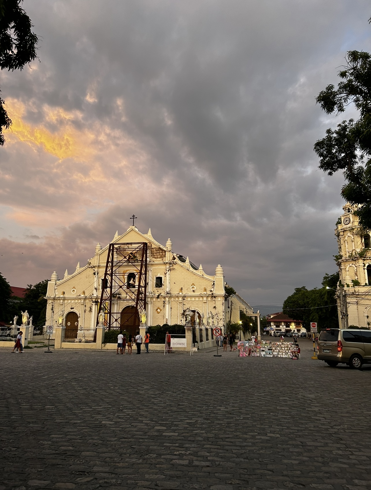
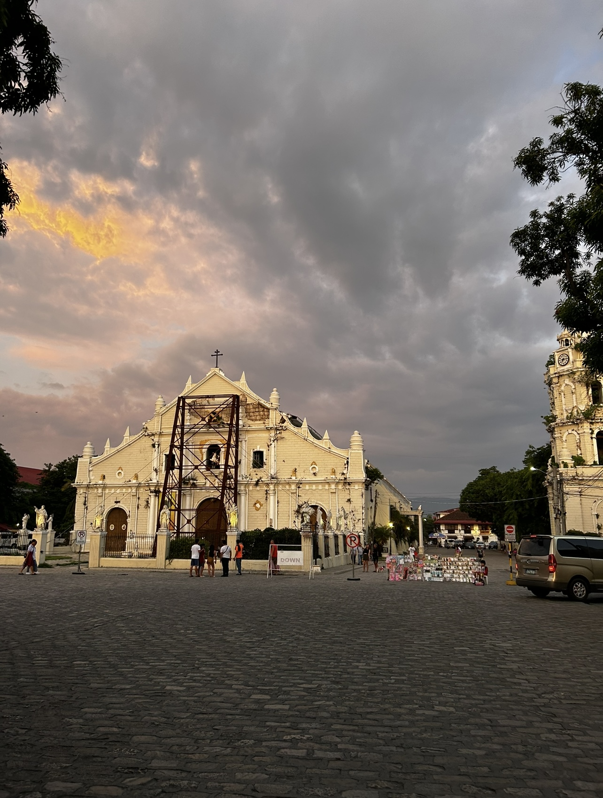

Calle Crisologo Heritage
 


Calle Crisologo, located in the heart of Vigan City, offers a glimpse into the rich history of the Spanish colonial era in the Philippines. This iconic cobblestone street is lined with well-preserved ancestral homes made from adobe, brick, and hardwood, showcasing timeless craftsmanship. During the day, its historic architecture glows under the sunlight, while at night, the warm light of traditional lamps transforms the street into a romantic haven. I live in Vigan City and I used to visit Calle Crisologo a lot. I really enjoyed strolling through its unique pathways, riding in a traditional kalesa (horse-drawn carriage), and exploring local shops filled with handwoven textiles, antiques, and regional delicacies, which visitors should do. Calle Crisologo is a perfect destination for anyone looking to experience Filipino heritage and immerse themselves in the rich history of Vigan City.
Bowden SunMaze
Bowden Sunmaze, located in south of Red Deer, Alberta, is a beautiful and welcoming farm boasting thousands of vibrant sunflowers. I enjoy this location for its peaceful sunflower fields, perfect for walking, taking photos, and enjoying nature. The best time to visit is from late summer to early fall when the sunflowers are in full bloom. The farm also has fresh produce, pumpkin patches, and picnic areas, making it a great spot for nature lovers and photographers.
Chesterman Beach


Chesterman Beach, located near Tofino on Vancouver Island, is a place I enjoy for its stunning Pacific Ocean views and peaceful atmosphere. It’s perfect for surfing, relaxing walks, or simply taking in the beauty of the surroundings. I particularly love the beach’s iconic sunsets and the tide pools teeming with marine life, which make it a favorite for nature enthusiasts. For those visiting for the first time, it's important to know that the beach offers both tranquility and adventure, making it a great spot whether you're looking to surf or explore. It’s a must-visit for anyone wanting to experience the raw beauty of Canada’s west coast.